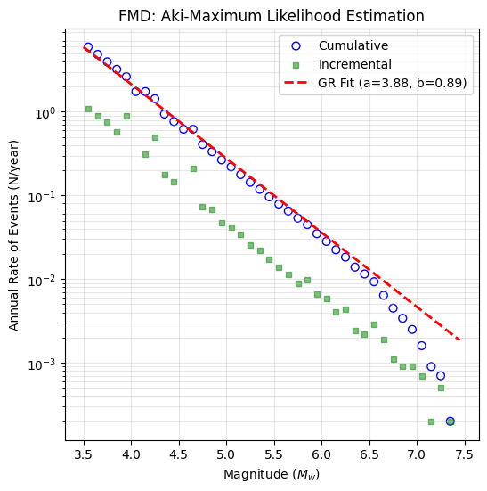

Gutenberg-Richter Recurrence Model Fitting
One of the fundamental components of Probabilistic Seismic Hazard Analysis (PSHA) is characterizing the seismicity of a source region by defining its Magnitude-Frequency Distribution (MFD). The MFD quantifies the expected annual rate of earthquakes exceeding a specific magnitude threshold.
The baseline mathematical framework for this analysis is the classic Gutenberg-Richter (G-R) recurrence law [10], expressed as:
Where:
N(M) is the cumulative annual rate of earthquakes with magnitudes greater than or equal to \(M\).
a-value represents the overall level of seismicity (productivity) of the zone.
b-value indicates the relative ratio of small to large earthquakes.
This notebook provides a workflow for analyzing an earthquake catalogue and fitting recurrence parameters using the OpenQuake Hazard Modeller’s Toolkit [1]. Specifically, we present two different algorithms to derive the Gutenberg-Richter parameters: Aki Maximum Likelihood and B-Value Maximum Likelihood (Both is available in openquake.hmtk.seismicity.occurrence).
[1]:
import pandas as pd
import numpy as np
import matplotlib.pyplot as plt
from openquake.hmtk.seismicity.catalogue import Catalogue
from openquake.hmtk.seismicity.occurrence.aki_maximum_likelihood import AkiMaxLikelihood
from openquake.hmtk.seismicity.occurrence.b_maximum_likelihood import BMaxLikelihood
Aki Maximum Likelihood (AkiMaxLikelihood)
Developed by Aki (1965) [11] and implemented here with the discrete bin-width correction by Bender (1983) [12], this method estimates the \(b\)-value using a Maximum Likelihood Estimation (MLE) approach.
While the original Aki formulation assumes a continuous magnitude distribution, earthquake catalogues group magnitudes into discrete bins (e.g., \(\Delta M = 0.1\)). To prevent statistical bias arising from this discretization, the code integrates Bender’s correction factor and formulates the calculation as:
Where:
\(\mathbf{\bar{M}}\) (
m_ave): The mean magnitude of the events that are equal to or greater than the completeness magnitude (\(M \geq M_c\)).\(\mathbf{M_{min}}\) (
m_min): The minimum discrete magnitude bin placeholder above or equal to \(M_c\) within the sample.\(\mathbf{\Delta M}\) (
dmag): The magnitude bin width interval (typically \(0.1\)).
The standard deviation (\(\sigma_b\)) of the estimated \(b\)-value is computed using the sample variance weighted by the number of observations per bin, following Bender’s uncertainty estimator:
The required input for AkiMaxLikelihood algorithm is briefly described below. For more detailed information, please see Data Format section.
catalogue (str): Path to the HMTK-formatted CSV catalogue.
Mc: Completeness magnitude for the catalogue.
[2]:
df = pd.read_csv("../data/hmtk_sample_catalogue.csv")
Mc = 3.5
catalogue = Catalogue()
catalogue.data = {'magnitude': df['magnitude'].values, 'year': df['year'].values.astype(int)}
catalogue.end_year = int(df['year'].max())
end_year = int(catalogue.end_year)
start_year = int(catalogue.data['year'].min())
time_span = end_year - start_year + 1
print(f"Start year={start_year}, End year={end_year}, Time Span={time_span} years")
Start year=1, End year=10000, Time Span=10000 years
Below, you see how to obtain \(b\)-value, its sigma, and \(a\)-value.
[3]:
# b_val and sigma_b calculation
b_val, sigma_b = AkiMaxLikelihood().calculate(catalogue, completeness=Mc)
# a_val calculation
df_complete = df[df["magnitude"] >= Mc]
neq_complete = len(df_complete)
# Annualized earthquake rate (N_cumulative / T)
annual_rate = neq_complete / time_span
a_val = np.log10(annual_rate) + b_val * Mc
print(f"Results: a={a_val:.3f}, b={b_val:.3f} ±{sigma_b:.3f}")
Results: a=3.881, b=0.888 ±0.004
You can plot the FMD using obtained GR parameters, and catalogue.
[4]:
# Plot FMD
bins = np.arange(df["magnitude"].min(), df["magnitude"].max() + 0.1, 0.1)
hist, edges = np.histogram(df["magnitude"], bins=bins)
cum_evars = np.cumsum(hist[::-1])[::-1]
m_model = np.linspace(Mc, df["magnitude"].max(), 100)
v_model = 10 ** (a_val - b_val * m_model)
# Plot
plt.figure(figsize=(6, 6))
plt.scatter(edges[:-1], cum_evars / time_span, s=40, facecolors='none', edgecolors='b', label="Cumulative")
plt.scatter(edges[:-1], hist / time_span, s=20, color="g", marker="s", alpha=0.5, label="Incremental")
plt.plot(m_model, v_model, "r--", linewidth=2, label=f"GR Fit (a={a_val:.2f}, b={b_val:.2f})")
plt.yscale("log")
plt.xlabel("Magnitude ($M_w$)")
plt.ylabel("Annual Rate of Events (N/year)")
plt.title("FMD: Aki-Maximum Likelihood Estimation")
plt.grid(True, which="both", alpha=0.3)
plt.legend()
plt.show()

GR parameters with Time-Varying Completeness (BMaxLikelihood)
BMaxLikelihood algorithm enables an advanced extension based on Utsu (1965) [13], Weichert (1980) [14], and Bender (1983) [12] that accounts for both magnitude binning/discretization effects and time-varying magnitude completeness (Mc).
Historical catalogues are inherently non-homogeneous because seismic networks improve over time; smaller earthquakes are fully captured in recent years, whereas only larger events were recorded in the past. Treating such a partitioned catalogue with a completeness magnitude leads to systematic bias in Gutenberg-Richter parameters.
The BMaxLikelihood operates by partitioning the catalogue into distinct temporal windows based on a completeness table (defined by cut-off years \(T_i\) and corresponding magnitudes \(M_{c,i}\)).
For each chronological interval, the BMaxLikelihood isolates compliant events and invokes an underlying Aki MLE sub-routine with Bender’s bin-width (\(\Delta M\)) correction:
Once local \(b\)-values (\(b_i\)) and their uncertainties (\(\sigma_{b,i}\)) are stacked for all valid intervals, a single unified \(b_{final}\) is derived using a statistical ensemble approach defined in the configuration (Weighted or Harmonic mean):
Where \(N_i\) is the number of events in the \(i\)-th temporal completeness block.
Unlike the AkiMaxLikelihood, BMaxLikelihood jointly solves for the annualized productivity parameter (\(a\)-value) using the maximum likelihood solution for multi-period data formulated by Weichert (1980) [14] and McGuire (2004) [15].
Where \(T_i\) represents the seismic observation duration (years) for each interval, and \(\beta = b_{final} \cdot \ln(10)\). The calculated scalar is then mapped back to the baseline minimum magnitude (\(M_{min}\)) to compute the annualized \(a\)-value:
The BMaxLikelihood requires specific data structures and configuration parameters to handle time-varying completeness.
catalogue: An instance of the HMTK Catalogue object containing the earthquake database (specifically requires
magnitudeandyearattributes).completeness (
numpy.ndarray): A 2D completeness matrix/table structured as[[year_1, Mc_1], [year_2, Mc_2], ...]. It defines the chronological cut-off thresholds where specific magnitude ranges become statistically complete.config (
dict): A configuration dictionary containing the execution hyper-parameters:Average Type (str): Method used to ensemble the multi-period recurrence trends. Options are
"Weighted"(proportional to event-counts per window, recommended) or"Harmonic"mean.magnitude_interval (float): The magnitude bin width or rounding increment used in the catalog (typically
0.1), critical for Bender’s discretization correction.completeness (bool): Set to
Trueto activate multi-period analysis.reference_magnitude (float):
If set to
0.0orNone, the module executes standard Gutenberg-Richter reporting and returns the annualized \(a\)-value, \(b\)-value, and their respective uncertainties.If a specific engineering design magnitude is provided (e.g., \(M_w = 5.0\)), the algorithm bypasses standard parameter reporting and outputs the calculated annual exceedance rate (\(\lambda\)) and its variance for that exact threshold.
[5]:
bin_w = 0.1
Mc = 3.5
start_year = int(df["year"].min())
end_year = int(catalogue.end_year)
total_years = end_year - start_year + 1
completeness = np.array([[start_year, Mc]])
# Config
config = {
"Average Type": "Weighted",
"reference_magnitude": 0.0,
"magnitude_interval": bin_w,
"completeness": True
}
[6]:
# b_val, sigma_b, a_val, and sigma_a calculation
b_val, sigma_b, a_val, sigma_a = BMaxLikelihood().calculate(catalogue, config, completeness)
print(f"Results: a={a_val:.3f} ±{sigma_a:.3f}, b={b_val:.3f} ±{sigma_b:.3f}")
--- ctime 1.0 m_c 3.5
Results: a=3.881 ±0.013, b=0.888 ±0.004
[7]:
# Plot FMD
m_bins = np.arange(df["magnitude"].min(), df["magnitude"].max() + bin_w, bin_w)
hist, edges = np.histogram(df["magnitude"], bins=m_bins)
cum_events = np.cumsum(hist[::-1])[::-1]
m_model = np.linspace(Mc, df["magnitude"].max(), 100)
gr_model_total = (10 ** (a_val - b_val * m_model))
# Plot
plt.figure(figsize=(6, 6))
plt.scatter(edges[:-1], cum_events / total_years, s=40, facecolors='none', edgecolors='b', label="Cumulative")
plt.scatter(edges[:-1], hist / total_years, s=20, color="g", marker="s", alpha=0.5, label="Incremental")
plt.plot(m_model, gr_model_total, "r--", linewidth=2, label=f"GR Fit (a={a_val:.2f}, b={b_val:.2f})")
plt.yscale("log")
plt.xlabel("Magnitude ($M_w$)")
plt.ylabel(f"Annual Rate of Events (N/year)")
plt.title("FMD: B-Maximum Likelihood Estimation")
plt.grid(True, which="both", alpha=0.3)
plt.legend()
plt.show()